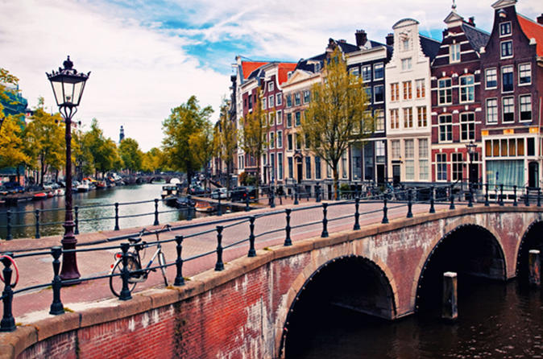
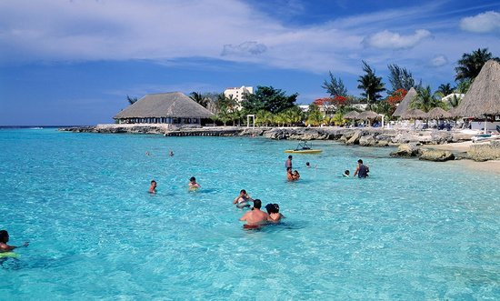
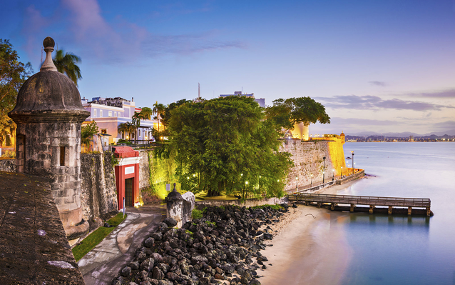
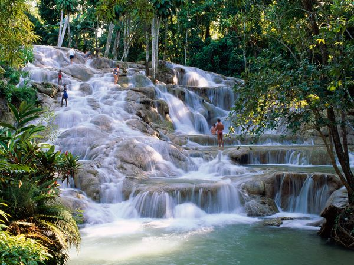

I was lucky as a child as I had many travel opportunities that most people don't get as my dad was a pilot for TWA.
Below is listed all of the places that his job enabled us to travel to.
Flums has an area, as of 2006, of 75.1 km2 (29.0 sq mi). Of this area, 51.7% is used for agricultural
purposes, while 32.2% is forested. Of the rest of the land, 3.9% is settled (buildings or roads) and the
remainder (12.1%) is non-productive (rivers or lakes).[4] The municipality is located in the
Sarganserland Wahlkreis. Until 2002 it was the capital of the Sargans district. In terms of area,
it is the third largest municipality in the canton. Flums covers from the Schils valley to the border
with the Canton of Glarus, part of the Flumserberge, part of the Seez valley and the western slope of
the Alvier chain. It consists of the village sections of Flums-Dorf, Grossberg and Kleinberg.
We visited Flums because my friend's, from elementary school, father was Swiss and he moved his family
back home to Flums. It was a great time for a kid in 5th grade. I learned to ski in the Swiss Alps, played
in the remains of old castles, and got to spend time with my friend.
Frankfurt, Germnay

Some information from Wikipedia about Frankfurt:
Frankfurt is home to many cultural and educational institutions, including the Goethe University, the
UAS and various graduate schools like the Frankfurt School of Finance & Management, the Alte Oper, many
museums (e.g., Städel, Senckenberg Natural Museum, Liebieghaus, Goethe House), the Schirn art venue at
the old town, and two major botanical gardens: the Palmengarten and the University's Botanical Garden.
In sports, the city is known as the home of the top tier football club Eintracht Frankfurt, the
basketball club Frankfurt Skyliners and the venue of Ironman Germany. Frankfurt is culturally and
ethnically diverse, with around half of the population, and a majority of young people, having an
immigrant background. A quarter of the population are foreign nationals, including many expatriates.
London, England
London was a great place to visit, and I had a lot of fun there. I was able to see Westminster Abbey,
Big Ben, and the changing of the guard at the palace. I also enjoyed some fish and chips and had a great
time overall.
Hawaii
Our visit to Honolulu, Hawaii is a visit that I will never forget. I remember thinking that this is
really paradise, as a rainbow stretched over Diamond Head as we were being driven to our hotel. I really
enjoyed spending time at Waikiki beach, and eating dinner looking at the sunset across the ocean. We
visited Diamond Head, and most notably, Pearl Harbor. Standing on the memorial with the ship Arizona
underneath us is something that I will never forget.
Grand Cayman
We went to Grand Cayman as part of a cruise. Grand Caymen was beautiful and the water was so clear that
you could look down from the surface and see the bottom over 100 feet down. I was lucky enough to go
ridge diving at Grand Caymen.
Cozumel

Cozumel was another location where I was able to go scuba diving. This time I went on a drift dive, which
is where we let the current take us. It was a great experience that made me almost feel like I was on
a ride at Disney World, since I was moving across the ocean floor without having to swim.
Puerto Rico

When we visited Puerto Rico, they were still cleaning up from a hurricane that hit there several months
earlier. I was surprised at how much damage was done and how much still remained. It made me feel for
the people of Puerto Rico.
Jamaica

Our final destination on our cruise was Jamaica. We had a good time there, and the thing I enjoyed the
most was climbing the rock waterfall.